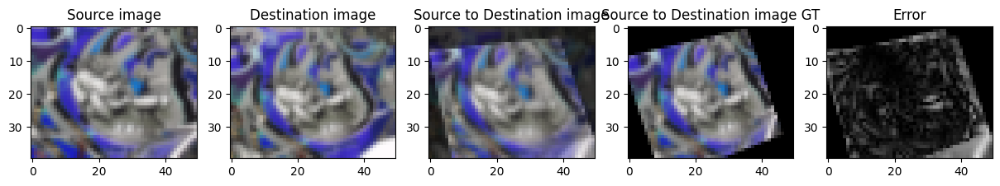

%%capture
!pip install kornia
!pip install kornia-rsImage Alignment by Homography Optimization
Advanced
Homography
kornia.geometry
In this tutorial we are going to learn how to perform the task of image alignment by optimising the homography transformation between two images.

import io
import requests
def download_image(url: str, filename: str = "") -> str:
filename = url.split("/")[-1] if len(filename) == 0 else filename
# Download
bytesio = io.BytesIO(requests.get(url).content)
# Save file
with open(filename, "wb") as outfile:
outfile.write(bytesio.getbuffer())
return filename
download_image("https://github.com/kornia/data/raw/main/homography/H1to2p")
download_image("https://github.com/kornia/data/raw/main/homography/img1.ppm")
download_image("https://github.com/kornia/data/raw/main/homography/img2.ppm")'img2.ppm'Import needed libraries
import os
from typing import List
import kornia as K
import matplotlib.pyplot as plt
import numpy as np
import torch
import torch.nn as nn
import torch.nn.functional as F
import torch.optim as optim
from kornia.geometry import resize
# computer vision libs :DDefine the hyper parameters to perform the online optimisation
learning_rate: float = 1e-3 # the gradient optimisation update step
num_iterations: int = 100 # the number of iterations until convergence
num_levels: int = 6 # the total number of image pyramid levels
error_tol: float = 1e-8 # the optimisation error tolerance
log_interval: int = 100 # print log every N iterations
device = K.utils.get_cuda_or_mps_device_if_available()
print("Using ", device)Using cpuDefine a container to hold the homography as a nn.Parameter so that cen be used by the autograd within the torch.optim framework.
We initialize the homography with the identity transformation.
class MyHomography(nn.Module):
def __init__(self) -> None:
super().__init__()
self.homography = nn.Parameter(torch.Tensor(3, 3))
self.reset_parameters()
def reset_parameters(self):
torch.nn.init.eye_(self.homography)
def forward(self) -> torch.Tensor:
return torch.unsqueeze(self.homography, dim=0) # 1x3x3Read the images and the ground truth homograpy to convert to tensor. In addition, we normalize the homography in order to smooth the gradiens during the optimisation process.
img_src: torch.Tensor = K.io.load_image("img1.ppm", K.io.ImageLoadType.RGB32, device=device)[None, ...]
img_dst: torch.Tensor = K.io.load_image("img2.ppm", K.io.ImageLoadType.RGB32, device=device)[None, ...]
print(img_src.shape)
print(img_dst.shape)
dst_homo_src_gt = np.loadtxt("H1to2p")
dst_homo_src_gt = torch.from_numpy(dst_homo_src_gt)[None].float().to(device)
print(dst_homo_src_gt.shape)
print(dst_homo_src_gt)
height, width = img_src.shape[-2:]
# warp image in normalized coordinates
normal_transform_pixel: torch.Tensor = K.geometry.normal_transform_pixel(height, width, device=device)
dst_homo_src_gt_norm: torch.Tensor = normal_transform_pixel @ dst_homo_src_gt @ torch.inverse(normal_transform_pixel)
img_src_to_dst_gt: torch.Tensor = K.geometry.homography_warp(img_src, torch.inverse(dst_homo_src_gt_norm), (height, width))
img_src_vis: np.ndarray = K.utils.tensor_to_image(K.color.bgr_to_rgb(img_src))
img_dst_vis: np.ndarray = K.utils.tensor_to_image(K.color.bgr_to_rgb(img_dst))
img_src_to_dst_gt_vis: np.ndarray = K.utils.tensor_to_image(K.color.bgr_to_rgb(img_src_to_dst_gt))torch.Size([1, 3, 640, 800])
torch.Size([1, 3, 640, 800])
torch.Size([1, 3, 3])
tensor([[[ 8.7977e-01, 3.1245e-01, -3.9431e+01],
[-1.8389e-01, 9.3847e-01, 1.5316e+02],
[ 1.9641e-04, -1.6015e-05, 1.0000e+00]]])Show the source image, the target and the source image warped to the target using the ground truth homography transformation.
fig, (ax1, ax2, ax3) = plt.subplots(1, 3, sharey=True)
fig.set_figheight(15)
fig.set_figwidth(15)
ax1.imshow(img_src_vis)
ax1.set_title("Source image")
ax2.imshow(img_dst_vis)
ax2.set_title("Destination image")
ax3.imshow(img_src_to_dst_gt_vis)
ax3.set_title("Source to Destination image")
plt.show()Initialize the homography warper and pass the parameters to the torch.optim.Adam optimizer to perform an online gradient descent optimisation to approximate the mapping transformation between the two images.
# create homography parameters
dst_homo_src = MyHomography().to(device)
# create optimizer
optimizer = optim.Adam(dst_homo_src.parameters(), lr=learning_rate)
# send data to device
img_src, img_dst = img_src.to(device), img_dst.to(device)In order to perform the online optimisation, we will apply a know fine-to-coarse strategy. For this reason, we precompute a gaussian pyramid from each image with a certain number of levels.
### compute Gaussian Pyramid
def get_gaussian_pyramid(img: torch.Tensor, num_levels: int) -> List[torch.Tensor]:
r"""Utility function to compute a gaussian pyramid."""
pyramid = []
pyramid.append(img)
for _ in range(num_levels - 1):
img_curr = pyramid[-1]
img_down = K.geometry.pyrdown(img_curr)
pyramid.append(img_down)
return pyramid
# compute the gaussian pyramids
img_src_pyr: List[torch.Tensor] = get_gaussian_pyramid(img_src, num_levels)
img_dst_pyr: List[torch.Tensor] = get_gaussian_pyramid(img_dst, num_levels)Main optimization loop
Define the loss function to minimize the photometric error at each pyramid level:
$ L = |I_{ref} - (I_{dst}, H_{ref}^{dst}))|$
def compute_scale_loss(
img_src: torch.Tensor,
img_dst: torch.Tensor,
dst_homo_src: nn.Module,
optimizer: torch.optim,
num_iterations: int,
error_tol: float,
) -> torch.Tensor:
assert len(img_src.shape) == len(img_dst.shape), (img_src.shape, img_dst.shape)
# init loop parameters
loss_tol = torch.tensor(error_tol)
loss_prev = torch.finfo(img_src.dtype).max
for i in range(num_iterations):
# create homography warper
src_homo_dst: torch.Tensor = torch.inverse(dst_homo_src)
_height, _width = img_src.shape[-2:]
warper = K.geometry.HomographyWarper(_height, _width)
img_src_to_dst = warper(img_src, src_homo_dst)
# compute and mask loss
loss = F.l1_loss(img_src_to_dst, img_dst, reduction="none") # 1x3xHxW
ones = warper(torch.ones_like(img_src), src_homo_dst)
loss = loss.masked_select(ones > 0.9).mean()
# compute gradient and update optimizer parameters
optimizer.zero_grad()
loss.backward()
optimizer.step()Run the main body loop to warp the images from each pyramid level and evaluate the loss to perform gradient update.
# pyramid loop
for iter_idx in range(num_levels):
# get current pyramid data
scale: int = (num_levels - 1) - iter_idx
img_src = img_src_pyr[scale]
img_dst = img_dst_pyr[scale]
# compute scale loss
compute_scale_loss(img_src, img_dst, dst_homo_src(), optimizer, num_iterations, error_tol)
print(f"Optimization iteration: {iter_idx}/{num_levels}")
# merge warped and target image for visualization
h, w = img_src.shape[-2:]
warper = K.geometry.HomographyWarper(h, w)
img_src_to_dst = warper(img_src, torch.inverse(dst_homo_src()))
img_src_to_dst_gt = warper(img_src, torch.inverse(dst_homo_src_gt_norm))
# compute the reprojection error
error = F.l1_loss(img_src_to_dst, img_src_to_dst_gt, reduction="none")
print(f"Reprojection error: {error.mean()}")
# show data
img_src_vis = K.utils.tensor_to_image(K.color.bgr_to_rgb(img_src))
img_dst_vis = K.utils.tensor_to_image(K.color.bgr_to_rgb(img_dst))
img_src_to_dst_merge = 0.65 * img_src_to_dst + 0.35 * img_dst
img_src_to_dst_vis = K.utils.tensor_to_image(K.color.bgr_to_rgb(img_src_to_dst_merge))
img_src_to_dst_gt_vis = K.utils.tensor_to_image(K.color.bgr_to_rgb(img_src_to_dst_gt))
error_sum = error.mean(dim=1, keepdim=True)
error_vis = K.utils.tensor_to_image(error_sum)
# show the original images at each scale level, the result of warping using
# the homography at moment, and the estimated error against the GT homography.
%matplotlib inline
fig, (ax1, ax2, ax3, ax4, ax5) = plt.subplots(1, 5, sharey=False)
fig.set_figheight(15)
fig.set_figwidth(15)
ax1.imshow(img_src_vis)
ax1.set_title("Source image")
ax2.imshow(img_dst_vis)
ax2.set_title("Destination image")
ax3.imshow(img_src_to_dst_vis)
ax3.set_title("Source to Destination image")
ax4.imshow(img_src_to_dst_gt_vis)
ax4.set_title("Source to Destination image GT")
ax5.imshow(error_vis, cmap="gray", vmin=0, vmax=1)
ax5.set_title("Error")
plt.show()Optimization iteration: 0/6
Reprojection error: 0.17220830917358398Optimization iteration: 1/6
Reprojection error: 0.11565501242876053
Optimization iteration: 2/6
Reprojection error: 0.018368173390626907Optimization iteration: 3/6
Reprojection error: 0.013175368309020996Optimization iteration: 4/6
Reprojection error: 0.008068887516856194Optimization iteration: 5/6
Reprojection error: 0.005315570626407862